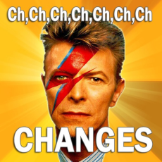

What is?

Goals
{kind=link}
- Avoid rushing to write tests before release
- Tighten (slightly) developer feedback loop
- Maintain software quality
- Maintain QA engineer sanity
Compare + Contrast with TDD
- Tests are not written before code
- Tests are not a gate to merging code
- Tests do help define the feature
- Tests do raise design questions before development starts
Context
- Direct Puppet Phase 3
- Planned and scheduled meticulously
- UI testing
- Mature code base and tests
- i18n effort happening concurrently
The Workflow
- Make tests in TestRail based on UX designs
- Ticket most TestRail tests
- Put those tickets into team sprints based on difficulty
- Write as much of the test as possible with current knowledge
- What steps need to be taken to verify this?
- What behavior questions are unanswered?
- Mark as 'pending'
- Check in to make sure that test cases are still appropriate
- Modify plans or existing tests as needed
- When the feature is complete, refine and unpend tests
Ch-Ch-Ch-Ch-Changes

- Project scope changes dramatically halfway through
- 3 QA on the team to 2
What Went Well
- We achieved our goals!
- We had time to modify our test plans
- We didn't feel panicked before release, and were even able to take 2 weeks off right before release
- We had a good understanding of the project
- We were able to ask clarifying questions and guide development
- We were able to handle unforeseen changes (relatively) gracefully
What I Would Do Differently
- Pace ourselves
- Request order of operations from developers
- Unpend tests more gradually
- Start earlier
- Separate QA tickets from developer tickets
- Improve Writing - Pending - Unpending workflow with Jira + Testrail
Takeaways
- Like everything, the earlier you do it the better it is
- Have time to adjust to sudden changes
- Are not panicked or rushed
- Taking extra time to plan test cases has value